기계설계기사 (2018-04-28 기출문제)
1과목: 재료역학
1. 그림의 H형 단면의 도심축인 Z축에 관한 회전반경(radius of gyration)은 얼마인가?
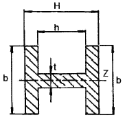
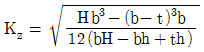
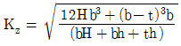
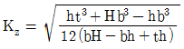
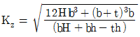
(정답률: 43%)

2. 그림과 같이 A, B의 원형 단면봉은 길이가 같고, 지름이 다르며, 양단에서 같은 압축하중 P를 받고 있다. 응력은 각 단면에서 균일하게 분포된다고 할 때 저장되는 탄성 변형 에너지의 비 UB/UA는 얼마가 되겠는가?
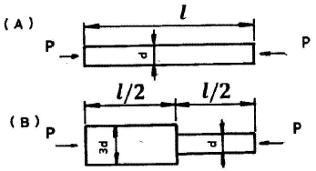
- 1/3
- 5/9
- 2
- 9/5
(정답률: 52%)
3. 길이 6m 인 단순 지지보에 등분포하중 q가 작용할 때 단면에 발생하는 최대 굽힘응력이 337.5MPa이라면 등분포하중 q는 약 몇 kN/m인가? (단, 보의 단면은 폭×높이=40mm×100mm이다.)
- 4
- 5
- 6
- 7
(정답률: 38%)
4. 지름 20mm, 길이 1000mm의 연강봉이 50kN의 인장하중을 받을 때 발생하는 신장량은 약 몇 mm인가? (단, 탄성계수 E=210GPa이다.)
- 7.58
- 0.758
- 0.0758
- 0.00758
(정답률: 55%)
5. 다음과 같이 3개의 링크를 핀을 이용하여 연결하였다. 2000N의 하중 P가 작용할 경우 핀에 작용되는 전단응력은 약 몇 MPa인가? (단, 핀의 직경은 1cm이다.)
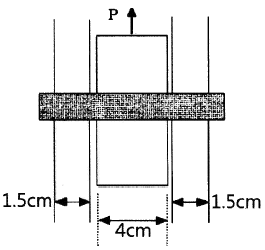
- 12.73
- 13.24
- 15.63
- 16.56
(정답률: 43%)
6. 지름이 60mm인 연강축이 있다. 이 축의 허용전단응력은 40MPa이며 단위 길이 1m당 허용회전각도는 1.5°이다. 연강의 전단 탄성계수를 80GPa이라 할 때 이 축의 최대 허용 토크는 약 몇 N·m인가?
- 696
- 1696
- 2664
- 3664
(정답률: 41%)
7. 평면 응력 상태에서 εx=-150×10-6, εy=-280×10-6, γxy=850×10-6일 때, 최대주 변형률(ε1)과 최소주변형률(ε2)은 각각 약 얼마인가?
- ε1=215×10-6, ε2=-645×10-6
- ε1=645×10-6, ε2=215×10-6
- ε1=315×10-6, ε2=-645×10-6
- ε1=545×10-6, ε2=315×10-6
(정답률: 22%)
8. 지름 3cm인 강축이 26.5rev/s의 각속도로 26.5kW의 동력을 전달하고 있다. 이 축에 발생하는 최대 전단응력은 약 몇 MPa인가?
- 30
- 40
- 50
- 60
(정답률: 38%)
9. 폭 3cm, 높이 4cm의 직사각형 단면을 갖는 외팔보가 자유단에 그림에서와 같이 집중하중을 받을 때 보 속에 발생하는 최대전단응력은 몇 N/cm인가?
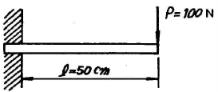
- 12.5
- 13.5
- 14.5
- 15.5
(정답률: 39%)
10. 그림과 같은 보에서 발생하는 최대굽힘 모멘트는 몇 kN·m인가?
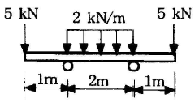
- 2
- 5
- 7
- 10
(정답률: 60%)
11. 그림과 같은 외팔보에 대한 전단력 선도로 옳은 것은? (단, 아랫방향을 양(+)으로 본다.)
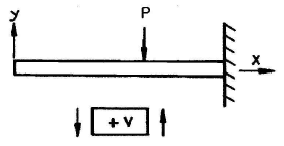
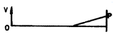
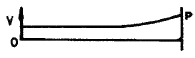
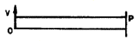
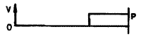
(정답률: 50%)
12. 보의 자중을 무시할 때 그림과 같이 자유단 C에 집중하중 2P가 작용할 때 B점에서 처짐 곡선의 기울기각은? (단, 세로탄성계수를 E, 단면 2차 모멘트를 I라고 한다.)
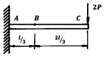
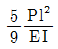
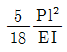
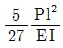
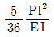
(정답률: 20%)
13. 원형 단면축이 비틀림을 받을 때, 그 속에 저장되는 탄성 변형에너지 U는 얼마인가? (단, T : 토크, L : 길이, G : 가로탄성계수, IP : 극관성모멘트, I : 관성모멘트, E : 세로 탄성계수이다.)
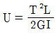
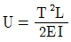
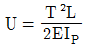
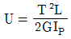
(정답률: 54%)
14. 그림에 표시한 단순 지지보에서의 최대 처짐량은? (단, 보의 굽힘 강성은 EI이고, 자중은 무시한다.)
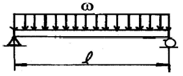
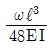
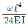
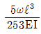
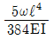
(정답률: 64%)
15. 원통형 압력용기에 내압 P가 작용할 때, 원통부에 발생하는 축 방향의 변형률 εx및 원주 방향 변형률 εy는? (단, 강판의 두께 t는 원통의 지름 D에 비하여 충분히 작고, 강판 재료의 탄성계수 및 포아송 비는 각각 E, v이다.)
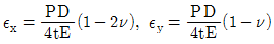
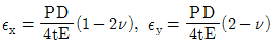
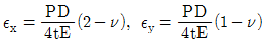
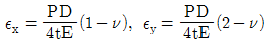
(정답률: 25%)
16. 그림에서 784.8N과 평형을 유지하기 위한 힘 F1과 F2는?
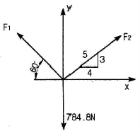
- F1= 395.2 N, F2= 632.4 N
- F1= 790.4 N, F2= 632.4 N
- F1= 790.4 N, F2= 395.2 N
- F1= 632.4 N, F2= 395.2 N
(정답률: 50%)
17. 최대 사용강도 400MPa의 연강봉에 30kN의 축방향의 인장하중이 가해질 경우 강봉의 최소지름은 몇 cm까지 가능한가? (단, 안전율은 5이다.)
- 2.69
- 2.99
- 2.19
- 3.02
(정답률: 44%)
18. 지름이 0.1m이고 길이가 15m인 양단힌지인 원형강 장주의 좌굴임계하중은 약 몇 kN인가? (단, 장주의 탄성계수는 200GPa이다.)
- 43
- 55
- 67
- 79
(정답률: 14%)
19. 그림과 같이 길이가 동일한 2개의 기둥 상단에 중심 압축 하중 2500N이 작용할 경우 전체 수축량은 약 몇 mm 인가? (단 단면적 A1=1000mm2, A2=2000mm2, 길이 L=300mm, 재료의 탄성계수 E=90GPa이다.)
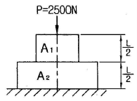
- 0.625
- 0.0625
- 0.00625
- 0.000625
(정답률: 44%)
20. 그림과 같이 전길이에 걸쳐 균일 분포하중 ω를 받는 보에서 최대처짐 δmax 를 나타내는 식은? (단, 보의 굽힘 강성계수는 EI이다.)
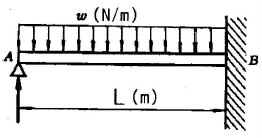
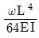
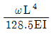
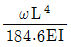
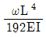
(정답률: 54%)
2과목: 기계제작법
21. 너트를 조정하여 점접촉이 이루어지므로 마찰이 적고 백래쉬를 “0”에 가깝게 할 수 있는 나사는?
- 볼 나사
- 삼각 나사
- 사다리꼴 나사
- 관용테이퍼 나사
(정답률: 63%)
22. 가공물, 미디어(media), 가공액 등을 통속에 혼합하여 회전시킴으로써 깨끗한 가공면을 얻을 수 있는 특수 가공법은?
- 배럴가공(barrel finishing)
- 롤 다듬질(roll finishing)
- 버니싱(burnishing)
- 블라스팅(blasting)
(정답률: 61%)
23. 프로젝션 용접(projection welding)의 특징에 관한 설명으로 틀린 것은?
- 전극수명이 짧다.
- 작업능률이 높다.
- 작업속도가 빠르다.
- 수 개의 용접이 동시에 가능하다.
(정답률: 58%)
24. 지그의 종류 중 공작물의 전체 면이 지그로 둘러싸인 것으로써 공작물을 한번 고정한 후 지그를 회전시키면서 전면을 가공할 수 있는 것은?
- 템플릿지그(template jig)
- 채널지그(channel jig)
- 박스지그(box jig)
- 리프지그(leaf jig)
(정답률: 52%)
25. 방전가공에 사용되는 가공액 중 절연유로 사용할 수 없는 것은?
- 석유
- 머신유
- 휘발유
- 스핀들유
(정답률: 64%)
26. 주조에서 탕구계의 기능이 아닌 것은?
- 부유 불순물을 분리시켜 모으는 기능
- 주형의 공간에 용탕을 주입시키는 기능
- 주형의 침식과 가스의 혼입을 방지할 수 있는 기능
- 용탕이 주입될 때 가급적 난류를 일으켜 주형 내에 유입되도록 하는 기능
(정답률: 42%)
27. 다음 용접 결함의 검사 방법 중 파괴검사에 속하는 것은?
- 자분검사
- 피로검사
- 방사선검사
- 초음파검사
(정답률: 76%)
28. 다음 중 밀링머신의 부속장치가 아닌 것은?
- 분할대(indexing head)
- 회전 테이블(rotary table)
- 컬럼 장치(column attachment)
- 슬로팅 장치(slotting attachment)
(정답률: 47%)
29. 재료를 재결정온도 이상에서 가공하는 열간가공의 특징으로 틀린 것은?
- 동력소모가 많다.
- 방향성을 갖는 주조조직이 제거된다.
- 파괴되었던 결정립이 다시 생성되어 재질이 균일해진다.
- 변형저항이 적어 짧은 시간 내에 강력한 가공이 가능하다.
(정답률: 56%)
30. 금속의 표면을 경화시키기 위한 물리적인 표면 경화법은?
- 질화법
- 청화법
- 침탄법
- 화염 경화법
(정답률: 72%)
31. 마찰용접의 특징으로 옳지 않은 것은?
- 치수정밀도가 높고 재료가 절약된다.
- 용접시간이 짧고 변형의 발생이 적다.
- 조작이 간단하고 이종 금속의 접합이 가능하다.
- 피용접물의 형상치수, 길이, 무게 등에 제한이 없다.
(정답률: 64%)
32. 절삭공구의 여유각이 작아 측면과 공작물과의 마찰에 의해 발생되는 마모는?
- 치핑(chipping)
- 구성인선(built-up edge)
- 플랭크 마모(flank wear)
- 크레이터 마모(crater wear)
(정답률: 48%)
33. 주철과 같이 취성이 큰 재질의 공작물을 절삭할 때 발생하기 쉬운 칩의 형태는?
- 유동형
- 전단형
- 열단형
- 균열형
(정답률: 60%)
34. 선반에서 지름 100mm의 탄소강재를 회전수 200rpm, 이송속도 0.25mm/rev, 길이 50mm를 1회 가공할 때 소요되는 시간은 몇 분인가?
- 0.01
- 0.1
- 1
- 10
(정답률: 43%)
35. 프레스작업에서 전단가공의 종류가 아닌 것은?
- 블랭킹
- 딤플링
- 트리밍
- 다이 커팅
(정답률: 62%)
36. 주입 중량이 256kg이고 주물의 살 두께가 56mm인 경우에 소요되는 주입시간은 약 몇 초인가? (단, 주물 살 두께 계수 S=4.45이다.)
- 31.8
- 43.6
- 64.5
- 71.2
(정답률: 15%)
37. 용접재를 강하게 맞대어 대전류를 통하게 하면 이음부 부근의 접촉 저항열에 의해 용접부가 적당한 온도에 도달한다. 이 때 축방향으로 큰 압력을 주어 용접하는 방법은?
- 심 용접
- 업셋 용접
- 퍼커션 용접
- 프로젝션 용접
(정답률: 36%)
38. 광유에 비눗물을 첨가한 것으로 원액과 물을 혼합하여 냉각과 윤활성이 좋고 값이 저렴하여 널리 사용되는 절삭유는?
- 석유
- 유화유
- 극압유
- 지방유
(정답률: 75%)
39. 방전가공용 전극재료의 구비조건으로 틀린 것은?
- 전기 저항값이 높고 전기 전도도가 낮을 것
- 융점이 높아 방전 시 소모가 적을 것
- 성형이 용이하고 가격이 저렴할 것
- 방전가공성이 우수할 것
(정답률: 76%)
40. 머시닝센터에서 로터리 테이블을 추가할 때 그 상부의 팰릿을 자동으로 교환시켜 기계정지 시간을 단축시킬 수 있는 장치는?
- APC
- ATC
- HSM
- FA
(정답률: 36%)
3과목: 기계설계 및 기계재료
41. 회전수가 1500rpm, 베어링 하중이 2500N, 기본 동정격하중이 35000N인 롤러 베어링의 수명은 약 몇 시간인가?
- 30460
- 52530
- 73480
- 95320
(정답률: 30%)
42. 핀(pin)이 주로 사용되는 용도에 해당하지 않는 것은?
- 너트의 풀림 방지
- 핸들과 축의 고정
- 조립 부품의 위치 결정
- 진동의 흡수
(정답률: 76%)
43. 코일 스프링에서 축방향 작용하중을 P, 코일의 유효지름을 D, 소선의 지름을 d, Wahl의 응력수정계수를 K라 할 때 최대전단응력 τmax 를 구하는 식으로 옳은 것은?
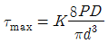
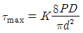
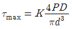
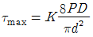
(정답률: 57%)
44. V-벨트 전동장치에서 벨트의 마찰계수 μ, V 홈의 각도는 2α라고 할 때, 벨트의 유효마찰계수 μ′를 구하는 식으로 옳은 것은?
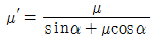
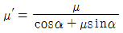
- μ′=μ(sinα+μcosα)
- μ′=μ(cosα+μsinα)
(정답률: 46%)
45. 용접이음의 일반적인 장·단점에 대한 설명으로 옳지 않은 것은?
- 이음 효율이 비교적 높은 편이다.
- 조립 공정의 자동화를 구현하기 어렵다.
- 열 영향으로 재료가 변질되기 쉽다.
- 볼트나 리벳에 비해 중량 증가가 거의 없다.
(정답률: 62%)
46. 단식 블록 브레이크에서 드럼의 원주속도는 8m/s, 제동 동력은 1.9kW일 때, 브레이크 용량(μpv, MPa·m/s)은? (단, 블록의 마찰면적은 50cm2이고, 마찰계수는 0.3이다.)
- 0.95
- 0.71
- 0.55
- 0.38
(정답률: 22%)
47. 벨트방식의 무단변속기에서 구동축의 회전수 2400rpm, 토크 150N·m이고 벨트 구동 풀리의 반지름은 60mm이다. 여기서 피동 풀리의 반지름이 180mm라고 할 때 피동축에서의 회전수(N)와 토크(T)는?
- N = 800rpm, T = 30N·m
- N = 800rpm, T = 450N·m
- N = 2400rpm, T = 150N·m
- N = 7200rpm, T = 30N·m
(정답률: 58%)
48. 모듈이 3인 인벌류트 치형의 표준 스퍼기어에서 이 뿌리 틈새를 0.25×모듈(m)으로 할 때 총 이 높이는 몇 mm인가?
- 3.75
- 4.50
- 6.75
- 7.50
(정답률: 59%)
49. 그림과 같이 탄성체인 볼트, 너트, 와셔, 두 평판이 체결되어 있다. 두 평판은 동일 재질로서 이들 스프링 상수는 K이며, 볼트의 스프링 상수는 Kb라고 할 때 K=8Kb가 성립한다. 볼트의 초기 체결력이 5000N, 두 평판 사이에 걸리는 외부하중(P)이 9000N이고 볼트의 단면에서의 허용인장응력이 70MPa일 때, 볼트의 최소 골지름은 약 몇 mm인가? (단, 와셔의 영향은 무시한다.)
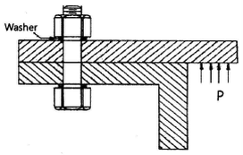
- 8.5mm
- 9.5mm
- 10.5mm
- 11.5mm
(정답률: 38%)
50. 역류를 방지하고 유체를 한쪽 방향으로만 흐르게 하는 밸브는?
- 스톱 밸브
- 나비형 밸브
- 감압 밸브
- 체크 밸브
(정답률: 68%)
51. 표점거리가 100mm, 시험편의 평행부 지름이 14mm인 시험편을 최대하중 6400kgf로 인장한 후 표점거리가 120mm로 변화 되었을 때 인장강도는 약 몇 kgf/mm2인가?
- 10.4
- 32.7
- 41.6
- 61.4
(정답률: 41%)
52. 상온에서 순철의 결정격자는?
- 체심입방격자
- 면심입방격자
- 조밀육방격자
- 정방격자
(정답률: 61%)
53. 탄소함유량이 0.8%가 넘는 고탄소강의 담금질 온도로 가장 적당한 것은?
- A1 온도보다 30 ~ 50℃ 정도 높은 온도
- A2 온도보다 30 ~ 50℃ 정도 높은 온도
- A3 온도보다 30 ~ 50℃ 정도 높은 온도
- A4 온도보다 30 ~ 50℃ 정도 높은 온도
(정답률: 34%)
54. 다음은 일반적으로 수지에 나타나는 배향 특성에 대한 설명으로 틀린 것은?
- 금형온도가 높을수록 배향은 커진다.
- 수지의 온도가 높을수록 배향이 작아진다.
- 사출 시간이 증가할수록 배향이 증대된다.
- 성형품의 살두께가 얇아질수록 배향이 커진다.
(정답률: 45%)
55. 금속침투법 중 Zn을 강 표면에 침투 확산시키는 표면처리법은?
- 크로마이징
- 세라다이징
- 칼로라이징
- 보로나이징
(정답률: 43%)
56. 다음 합금 중 베어링용 합금이 아닌 것은?
- 화이트메탈
- 켈밋합금
- 배빗메탈
- 문쯔메탈
(정답률: 57%)
57. 다음 그림과 같은 상태도의 명칭은?
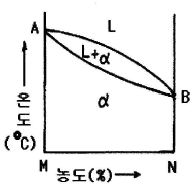
- 편정형 고용체 상태도
- 전율 고용체 상태도
- 공정형 한율 상태도
- 부분 고용체 상태도
(정답률: 49%)
58. 황(S) 성분이 적은 선철을 용해로에서 용해한 후 주형에 주입 전 Mg, Ca 등을 첨가시켜 흑연을 구상화한 주철은?
- 합금주철
- 칠드주철
- 가단주철
- 구상흑연주철
(정답률: 54%)
59. 금속나트륨 또는 플루오르화 알칼리 등의 첨가에 의해 조직이 미세화 되어 기계적 성질의 개선 및 가공성이 증대되는 합금은?
- Al - Si
- Cu - Sn
- Ti - Zr
- Cu - Zn
(정답률: 31%)
60. 영구 자석강이 갖추어야 할 조건으로 가장 적당한 것은?
- 잔류자속 밀도 및 보자력이 모두 클 것
- 잔류자속 밀도 및 보자력이 모두 작을 것
- 잔류자속 밀도가 작고 보자력이 클 것
- 잔류자속 밀도가 크고 보자력이 작을 것
(정답률: 56%)
4과목: 기구학 및 CAD
61. CAD 시스템에 의하여 수행되어지는 설계와 관련된 업무가 아닌 것은?
- 형상 모델링
- 설계 평가
- 자동 도면 작성
- 제품 검사
(정답률: 73%)
62. 다음 중 특징형상 모델링(feature-based modeling)에 대한 설명으로 거리가 먼 것은?
- 자주 설계되는 형상을 라이브러리에 저장해 둔다.
- 특징형상의 예로는 구멍(hole), 챔퍼(chamfer), 필릿(fillet) 등이 있다.
- 특징형상의 주요 치수는 주로 변하지 않게 되어 있다.
- 가공에 필요한 정보도 포함할 수 있다.
(정답률: 60%)
63. 다음 중 RP(쾌속조형장치)에 관한 설명으로 가장 옳은 것은?
- 일반적으로 절삭공구를 사용한다.
- 얇은 판을 적층시키는 방법으로 시제품을 제작한다.
- 2차원 도면으로부터 3차원 실물을 직접 제작할 수 있다.
- 유한요소법을 활용한다.
(정답률: 59%)
64. 다음은 경도(u)와 위도(v)를 매개변수로 한 지구표면의 곡면식이다. 이와 관련된 설명 중 틀린 것은?
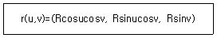
- 이 곡면은 반경이 R인 구면이다.
- 적도 위의 한 점(v=0)에서 극점 방향으로의 곡률반경은 1/R이다.
- 적도 위의 한 점(v=0)에서 적도를 따라가는 방향으로의 tangent 벡터는 (-Rsinu, Rcosu,0)이다.
- 적도 위의 한 점(v=0)에서 극점방향으로의 tangent 벡터는 (0,0,R)이다.
(정답률: 46%)
65. 다음 형상 모델링에 대한 설명 중 틀린 것은?
- 와이어프레임 모델은 명확한 단면도 작성이 가능하다.
- 솔리드 모델링에 의해 생성된 모델은 어떤 지점이 모델의 내부인지 외부인지 구별할 수 있는 수학적 표현이 포함되어 있다.
- 서피스 모델은 점과 선의 정보와 더불어 면에 대한 정보를 포함하는 모델이다.
- 솔리드 모델은 FEM(Finite Element Method)을 위한 메쉬 자동분할이 가능하다.
(정답률: 60%)
66. 다음 중 컴퓨터 그래픽에서 3차원 공간 위의 한 점을 정의하는 기본적인 3차원 좌표계가 아닌 것은?
- 작업물 좌표계(work coordinate system)
- 모델 좌표계(model coordinate system)
- 시각 좌표계(viewing coordinate system)
- 세계 좌표계(world coordinate system)
(정답률: 35%)
67. 다음 중 직사각형을 평행사변형으로 만들려고 할 때 사용되는 변환은?
- 전단(shearing) 변환
- 회전(rotation) 변환
- 반사(reflection) 변환
- 크기(scaling) 변환
(정답률: 50%)
68. 다음 은선, 은면 제거 알고리즘에 대한 설명 중 옳은 것은?
- 후향면(back-face) 제거 알고리즘은 물체의 안쪽 방향에 있는 법선벡터가 관찰자쪽으로 향하고 있다면 물체의 면이 가시적이고, 그렇지 않으면 비가시적이라는 기본 개념을 이용한다.
- 깊이 분류(depth-sorting) 알고리즘에서는 물체의 면들이 관찰자로부터의 거리로 정렬되며, 가장 먼 면부터 가장 가까운 면으로 각각의 색깔로 채워진다.
- 후향면 제거 알고리즘은 특히 오목한 물체의 숨은 면을 제거하는 데 적합하다.
- z-버퍼 방법에서는 법선벡터가 관찰자 앞쪽을 향하는 면들이 관찰자로부터의 거리 순서로 스크린에 투영된다.
(정답률: 39%)
69. 다음 중 Bezier 곡선에 해당하지 않는 사항은?
- 곡선은 다각형의 시작점과 끝점을 통과하여야 한다.
- 다각형의 꼭지점 순서가 거꾸로 되어도 같은 곡선이 생성되어야 한다.
- 다각형 양끝의 선분은 시작점과 끝점의 접선벡터와 같은 방향이다.
- 첫 번째 조정점을 움직여도 마지막 조정점 근처의 곡선 부분은 영향을 받지 않는다.
(정답률: 35%)
70. 의료용 영상자료를 3차원으로 모델링하기 위해서 자주 사용되는 방법으로서 일정한 간격의 부피를 차지하는 기본적인 입체요소들의 집합으로 임의의 형상을 표현하는 형상모델을 지칭하는 용어는?
- 날개 모서리 모델(winged edge model)
- 특징 형상 모델(feature-based model)
- 분해 모델(decomposition model)
- 오일러 모델(Euler model)
(정답률: 52%)
71. 다음 그림에서 OP가 정지상태에서 출발하여 O를 중심으로 하여 각 가속도 10rad/s2으로 화살표 방향으로 회전했을 때, 0.6초 후의 P점의 속도(v′)는 약 몇 cm/s인가? (단, 의 길이는 20cm이다.)
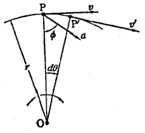
- 36
- 72
- 60
- 120
(정답률: 31%)
72. 마찰차에서 운전 중에 운전자가 원하는 대로 속도비를 변경할 수 있는 무단변속기구가 아닌 것은?
- 타원 마찰차식 무단변속기구
- 원판 마찰차식 무단변속기구
- 원추 마찰차식 무단변속기구
- 구면 마찰차식 무단변속기구
(정답률: 63%)
73. 잇수 Z개, 피치가 pmm인 체인 스프로킷이 nrpm으로 회전할 때 체인의 평균속도(v, m/s)를 구하는 식은?
- v=1000×npZ
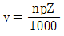
- v=60000×npZ
(정답률: 61%)
74. 그림과 같은 링크 구조의 자유도는 얼마인가?
- 0
- 1
- 2
- 3
(정답률: 49%)
75. 연쇄의 종류 중 연쇄를 구성하는 1개의 링크에 운동을 주면 다른 링크는 모두 제한된 일정한 운동만을 하는 연쇄는?
- 고정 연쇄
- 한정 연쇄
- 불한정 연쇄
- 불구속 연쇄
(정답률: 70%)
76. 캠 설계를 잘못했을 때 나타나는 경우 중 변위 함수의 차수를 작게 할 경우 가속도 함수가 무한대로 나타날 수가 있다. 이 때 무한대로 나타난 함수를 무엇이라고 하는가?
- 저크 함수(Jerk function)
- 구간 함수(Piecewise function)
- 디락 델타 함수(Dirac delta function)
- 조화 함수(Harmonic function)
(정답률: 59%)
77. 압력 각이 20°인 표준 스퍼 기어에서 언더컷을 일으키지 않는 이론 한계 잇수는 몇 개 인가?
- 15개
- 17개
- 19개
- 21개
(정답률: 52%)
78. 다음 전동용 기계요소 중 가장 정확한 속도비를 얻을 수 있는 전동방식은?
- 평벨트
- V벨트
- 체인
- 로프
(정답률: 62%)
79. 직선운동기구에는 크게 엄밀직선운동기구(exact straight line motion mechanism)와 근사직선운동기구(approximate straight line motion mechanism)로 나눌 수 있는데 다음 중 엄밀직선운동기구에 속하는 것은?
- 와트 기구(Watt’s mechanism)
- 로버트 기구(Robert’s mechanism)
- 체비셰프 기구(Tschebyscheff’s mechanism)
- 포슬리어 기구(Peaucellier’s mechanism)
(정답률: 37%)
80. 지름 2m의 바퀴가 130rpm으로 회전할 때, 각속도(w) 및 원주 속도(v)는 약 얼마인가?
- w =13.6 rad/s, v =13.6 m/s
- w =13.6 rad/s, v =17 m/s
- w =15 rad/s, v =13.6 m/s
- w =20 rad/s, v =20 m/s
(정답률: 42%)